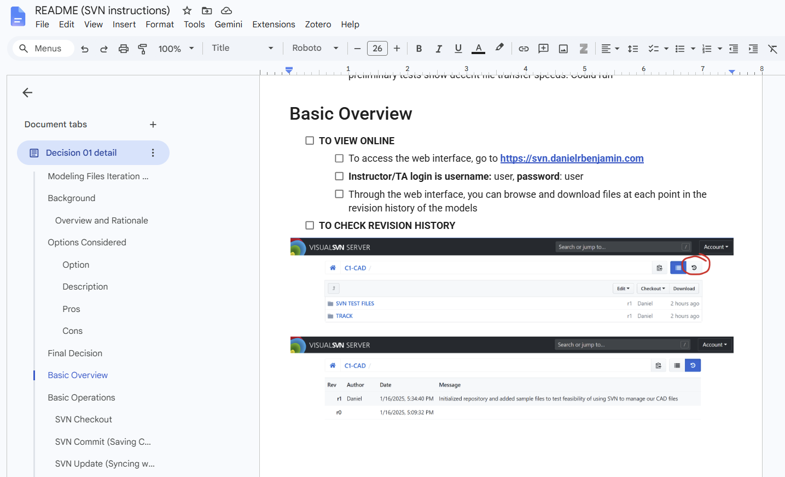
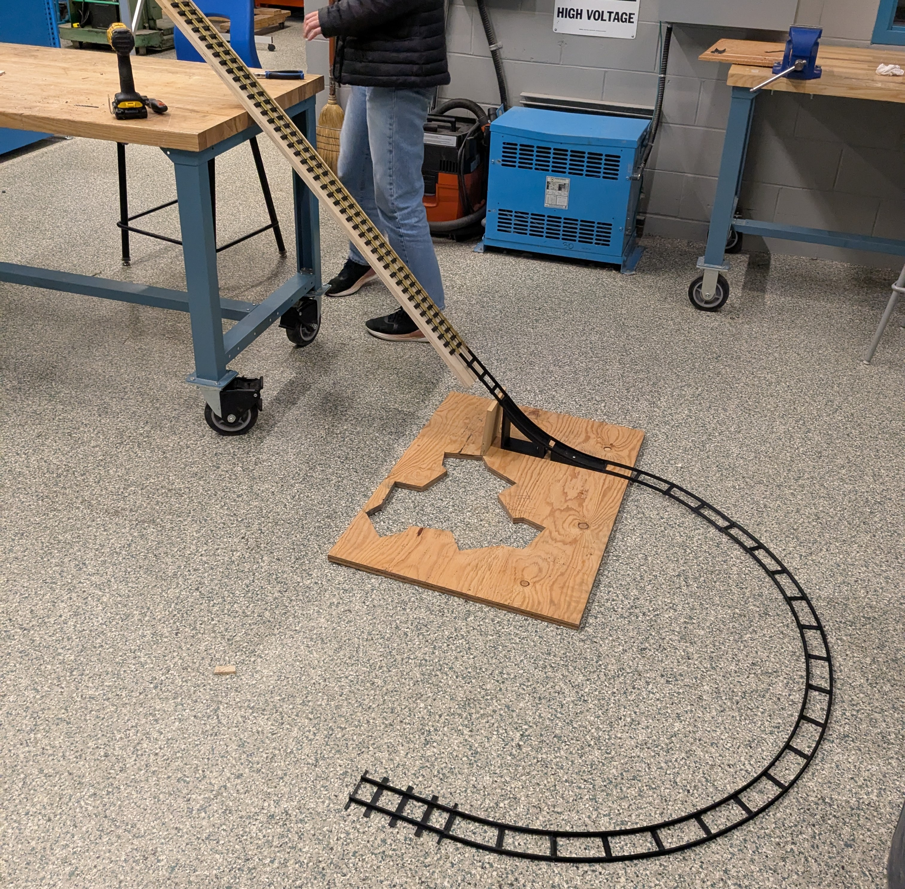
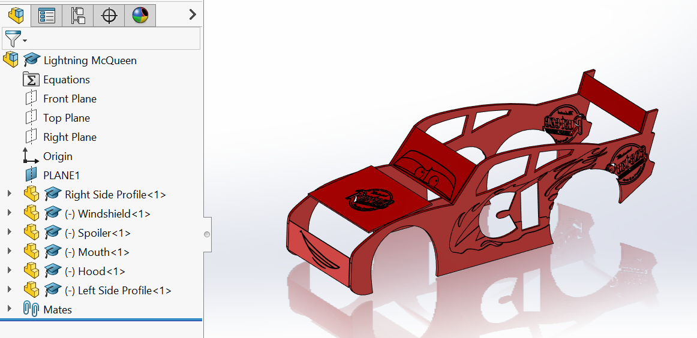
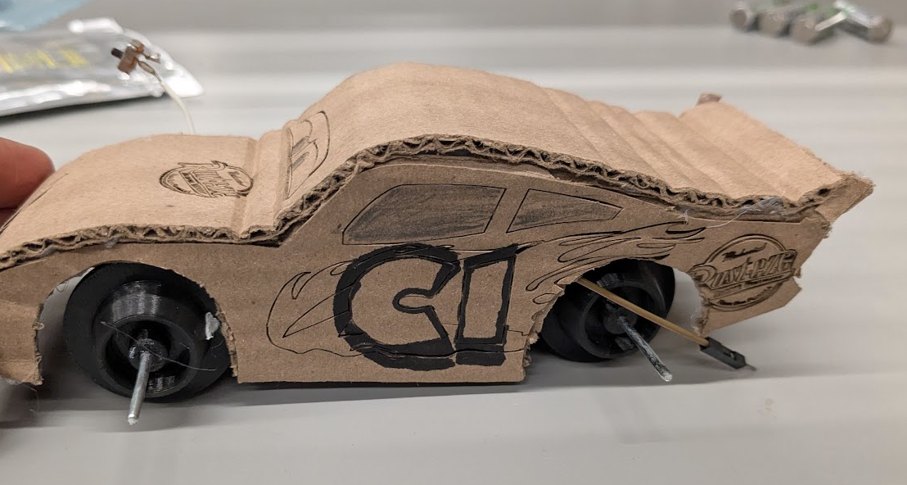
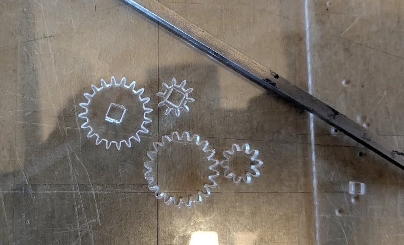
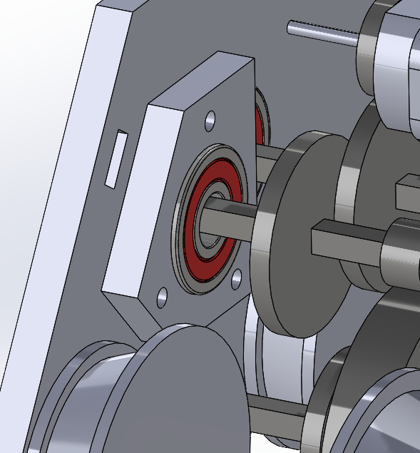

MECH 223 Rail Speeder & Hauler
Two rail vehicles, one term: a speeder that didn't finish its track, and the hauler that redeemed it, plus the documentation system I set up so a five-person team could collaborate without losing work.

Project Summary
- Coordinated a five-person design-build team and introduced SVN for CAD locking.
- Built a representative track fixture and iterated the drivetrain from failed prototypes.
- A speed-focused rail speeder followed by a payload hauler.
- A two-speed acrylic gearbox with an offset bearing layout.
- The hauler carried its payload reliably and on schedule.
- Version control preserved the exact part revisions used in the competition build.
Overview
MECH 223 is UBC Mechanical Engineering's second-year design-build course. Working in teams, students take a concept to a fully functional prototype within a single academic term, on a fixed budget and a hard deadline. The course ran as two projects. The first was to design a rail-bound speeder to complete a track in the shortest possible time. The second, revealed only after the first project concluded, was to design a rail-bound hauler that could repeatedly carry a payload across the track as reliably as possible.
The challenge went beyond the technical design. We had to balance an ambitious build schedule against a full course load while coordinating a five-person team through design reviews, manufacturing, testing, and iteration.
Project 1: Rail Speeder
We started by following the standard engineering design process: broke the project brief down into a clear set of requirements and evaluation criteria, built a Gantt chart against the deliverable dates, and split into individual research before regrouping as a team to sketch concepts. We developed those sketches into a final design with a Pugh chart and a weighted decision matrix.
Once the concept was set, we split the work. I was wholly in charge of the test railway fixture we'd use to validate the car before competition, the aesthetic frame, the project documentation setup, and I also helped a teammate with the drivetrain manufacturing.
Version Control
I set up a logical folder hierarchy in a shared Google Drive for documentation, which worked well for reports but broke down for CAD, since multiple people were working in the same assembly and we needed real version control to avoid overwriting each other's work, which Drive couldn't give us.
After looking at a few options, including GitHub and Onshape's built-in version control, I settled on a self-hosted VisualSVN server, with a folder per subassembly and a check-out/check-in workflow so two people couldn't edit the same file at once. I wrote a guide so the rest of the team could use it without first learning SVN.

This was the least visible part of the project and the one I'd point to first. It meant every part had a version history, nobody's local copy of the assembly could silently drift from everyone else's, and we lost zero work to file conflicts for the rest of the term. On a five-person team sharing one CAD tree under a deadline, that's not the default outcome.
Track Fixture
To test the car before competition, I modeled the track from the one sample rail section we'd been given, including a curve built to the worst-case radius allowed under the rules' specified range. I took careful measurements off the sample rail so the fixture would match the real track closely enough that a good run on the bench meant a good run at competition.

Build & Result
I helped manufacture the drivetrain and chassis, where we prototyped both spur-gear and worm-gear drivetrains before settling on one. Once the drivetrain's rough envelope was locked in, I modeled an aesthetic frame around it, a Lightning McQueen tribute, in SOLIDWORKS, ported the geometry to AutoCAD as DXFs, and laser cut it from cardboard to keep our sustainable-materials score up.

Even with the planning, drivetrain issues in each of our prototypes forced us to rush final assembly, and the car wasn't able to complete the track at competition. It was a hard lesson in testing and iterating early rather than late, and in sticking to a plan while still being flexible. A well laid out plan is useless if you can't adapt when necessary. We carried both lessons straight into the second project.

Project 2: Rail Hauler
For the second project we were motivated to redeem ourselves on the track. We started by analyzing the new brief and reflecting on what had gone wrong the first time. We built another Gantt chart, but this time stayed adaptable instead of locking ourselves into a schedule of small tasks that could tie us up.
Our first drivetrain design didn't have the torque to move a loaded hauler, so we iterated a new one from scratch. I personally took on the chassis and wheels, a teammate took on the drivetrain, and the rest of the team focused on documentation and the written deliverables, letting each of us work from our strengths rather than splitting everything evenly and not having clear accountability.
Gearbox & Drivetrain
The failure that hurt us most in the first project was gears slipping on the axle. For the hauler, we switched from a round shaft to a square one. That fixed the slipping but broke the bearing fit, since a round bearing bore doesn't take a square shaft. I designed and 3D printed custom adapters to seat the square shaft in standard round bearings.
The gears themselves took three tries. PLA gears, printed on the printers we had access to, were too weak and didn't mesh cleanly. Resin-printed gears were more precise but too fragile under repeated load. Building on what I learned from the first project, I ended up laser cutting the gears as well as stronger bearing adapters from acrylic instead. They were strong enough, and precise enough at small scale, to fit inside a custom shifting gearbox with a fast gear for the speed round and a slower, higher-torque gear for hauling cargo.

That gearbox needed two sets of bearings mounted closer together than they'd fit side by side. Rather than spending money on smaller bearings, I offset them instead, staggering the pairs so both fit within the available width without interfering with each other.

Once the gearbox prototype was solidified, I folded it into the full CAD assembly.
Results
The hauler carried its payload across the track reliably and on schedule, on the strength of a full design-build-test cycle instead of a rushed one. The version-control setup outlived its original purpose, too. It's the reason we could tell, after the fact, exactly which revision of which part went into the vehicle that ran.